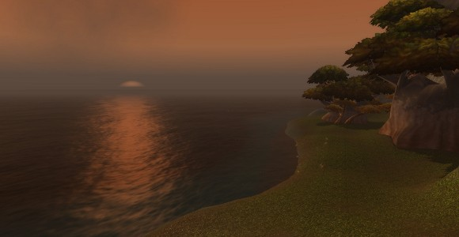
Beach in Ahnqiraj
Our own Olivia Grace nominated this location and provided the screenshot, and I couldn't agree more. As the name implies, this is the secret beach behind Ahn'Qiraj, an eerie, deserted spot that has a lonely beauty all its own. It's an ideal place for your toon to sit and watch the sun set over The Veiled Sea.
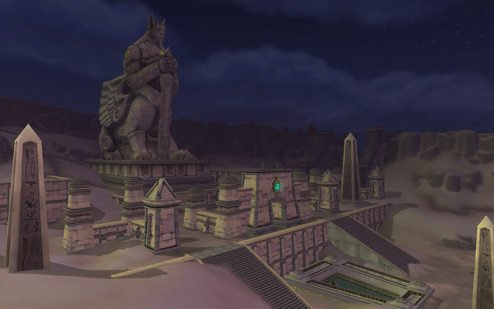
Uldum
Uldum (pronounced: [ˌuːlˈduːm]) is an ancient desert located on the southern coast of Kalimdor, surrounded by the Un'Goro Crater in the north, Tanaris in the east and Silithus in the northwest. It is the homeland of stone-cat people known as tol'vir and is rich with titan lore.
A superweapon is rumored to exist in Uldum which the Alliance, Horde and Deathwing's minions seek. There is no super weapon, however; Uldum is the weapon, intended to wipe out all life on Azeroth in case Algalon the Observer's Reply-Code Omega went through to the titans.
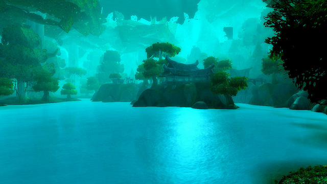
Moonglade
Moonglade is a haven for druids, and home of the Cenarion Circle. Here, tauren and night elves coexist peacefully, united by their reverence for the spirit of nature. Conflict between the races in Moonglade is not tolerated by its protectors.
Druids come here as part of their training to commune with the Great Bear Spirit (at level 10 or higher). Only after they gain her blessing can they learn to use their Bear Form. Oddly enough, for a land made especially for Druids, there is only one druid trainer here.
The demigod Omen sleeps at the depths of Lake Elune'ara, awakening every year around the time of the Lunar Festival.
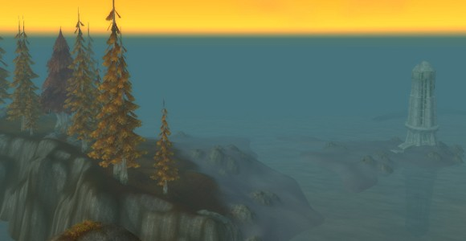
Aszhara
Azshara was one of the most affected zones of Cataclysm, and while the changes have in many ways revitalized the area, I will admit that I was sad to see the original Azshara go. It was the place I always went to when I wanted true solitude in game, but didn't want to spend ages swimming around a coastline to get to a secret area. Azshara just felt remote. Its orange, red, yellow, and brown color palette gave it a desolate, autumnal beauty that really can't be found anywhere else in the game. Though it's been heavily remodeled by the goblins, some of its former incarnation persists in places such as the Bitter Reaches, and for that I am glad.
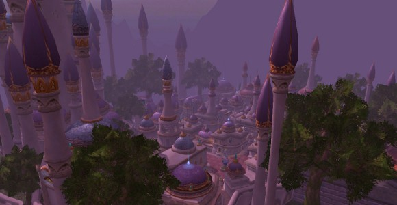
Dalaran
Dalaran is, to my mind, easily the most beautiful city in the game, though Silvermoon gives it a run for its money. With soaring purple spires and warm red-bricked streets, Dalaran feels inviting enough to actually live in. Dalaran also boasts an impressive view of the Storm Peaks and Icecrown from its position high above the ethereal glowing trees of Crystalsong Forest, a stunning zone in and of itself.
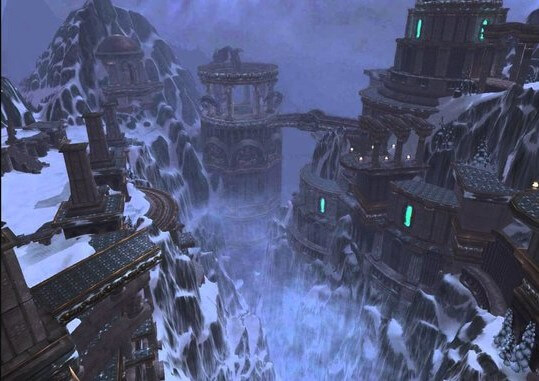
Storm Peaks
The Storm Peaks are a mountain range and region located in the northeast of Northrend. The winds that rip through the mountains are extremely violent and dangerous. Due to high winds and avalanches, the Sons of Hodir recommend bringing at least two companions if venturing into the dangerous Storm Peaks
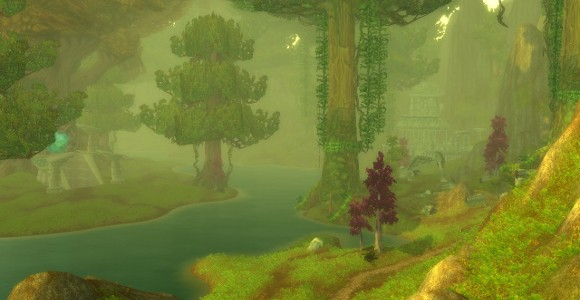
Feralas
I love Feralas as a whole. Like Azshara, it has a real sense of remoteness that's not often found in WoW. I spent a while flying around the zone trying to determine the best spot, and eventually settled on Oneiros and Jademir Lake, which borders Dream Bough, one of the four portals into the Emerald Dream. All four portals have lovely scenery, but this one is my favorite. This area is easily accessible for Alliance thanks to the flight point at nearby Dreamer's Rest, but Horde will have to do a bit more running.
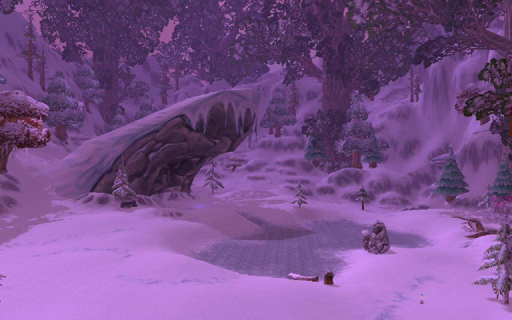
Winterspring
Winterspring (aka Winterspring Valley or Winterspring Grove) is a valley located in northeastern Kalimdor, east of Felwood and Hyjal, and north of Azshara. It is a cold land perpetually covered in snow, and holds the goblin city of Everlook, old night elf holdings, and the traditional homeland of the blue dragonflight. Many wild creatures roam the beautiful landscape. However, the southern parts of the region have been completely taken over by demons.
Holwing Fjord
I think there are many Alliance players who vividly remember the first time they took the boat into Howling Fjord from Menethil Harbor. The above screenshot is one of the first sights that greets you as you sail into Valgarde - an ever-burning Vrykul ship chained to the cliffs above the narrow channel. Black smoke pours into the sky, nearly obscuring the center of the bridge above. It's one of the most memorable tableaux I've witnessed in all of WoW, and one of the most visually arresting.
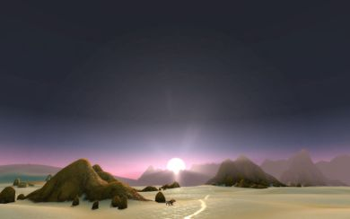
Tanaris
Tanaris, or the Tanaris Desert, is a desert located in Southern Kalimdor, east of Un'Goro Crater and south of Thousand Needles. It is an arid land, covered in sand dunes and frequently exposed to dangerous sandstorms. The Steamwheedle Cartel goblins have established Steamwheedle Port and Gadgetzan as their main centers of operation. The dock in Steamwheedle Port was presumably used for transport to the outer islands of the Undermine, the goblin capital, but it was destroyed in the Cataclysm, which also brought the ocean to Gadgetzan, where the goblins built a new dock for their shipping needs.
Queldanas
Quel'Danas, Eversong, and Silvermoon were all shoo-ins for this list, the only hard part was deciding which specific location it would be! There are some beautiful spots in southwestern Eversong, such as Goldenbough Pass, which were strong contenders, but in the end I settled on Sun's Reach in Quel'Danas itself. Quel'Danas incorporates both the lovely Thalassian architecture from Silvermoon as well as the gorgeous golden-leaved, white-barked trees from Eversong Woods, and combines them in such a way that brings out the best of both.
Jade-Forest
I think Jade Forest is easily the prettiest zone in Pandaria, and the Shrine of Fellowship is one of my favorite places there. Situated at the top of a peak, you can take in the view without the trees themselves crowding out the other sights. While you're there, don't forget to straighten the broken incense burner for your Restore Balance achievement.
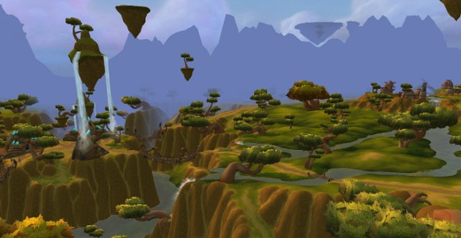
Nagrand
Nagrand remains a perennial favorite among WoW players, and for good reason. It's one of the few zones in Outland that feels truly lush despite the huge amount of damage Gul'dan, Nerzhul, the Burning Legion, Illidan, and Kael'thas have all inflicted upon the land. This particular location is the Halaani Basin, my choice primarily because I love the eternal waterfalls pouring out of that floating rock in the left side of the picture. The never-ending spring is one of the many indicators that Outland is positively soaked in magic.
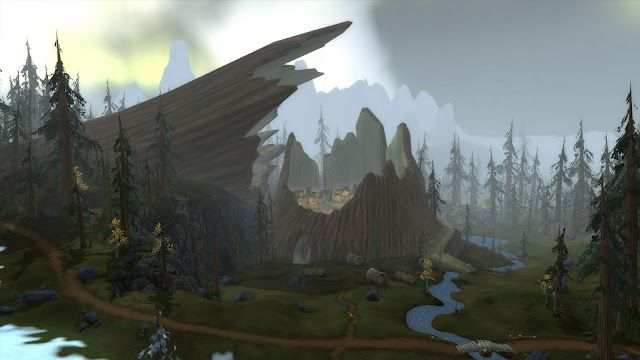
Grizzly Hills
The Grizzly Hills, located in southeastern Northrend, is a forested area, surrounded by the Howling Fjord to the south, the Dragonblight to the west and Zul'Drak to the north. It is the homeland of the Grizzlemaw furbolgs. Over 20,000 furbolgs live in this zone, most in the large settlement of Grizzlemaw. Both the dwarven settlement of Thor Modan and Ice Troll/Scourge fortress of Drak'Tharon Keep can be found in the north. The main faction bases are Amberpine Lodge for the Alliance and Conquest Hold for the Horde.
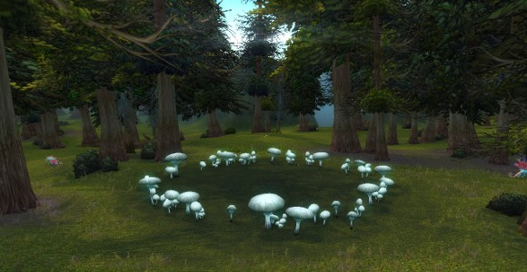
Tirisfal
Long ago, after the War of the Ancients, the quel'dorei were exiled from Kalimdor for refusing to give up the use of magic like the other night elves. They sailed across the sea to what is now known as the Eastern Kingdoms, and the western part of Tirisfal Glades is the first place they tried to settle. It didn't go so well for them; after a few years many of them inexplicably went mad. The other high elves decided this wasn't the place for them after all, and continued north to found Quel'Thalas. Some say that an Old God resides beneath that region of Tirisfal, and that's the source of the madness. Nobody knows for certain, but the Whispering Forest remains a lonesome, haunted, primal wood prone to strange occurrences.
Vashjir
Located in the eastern portion of the Abyssal Depths, the Tenebrous Cavern incorporates many of my favorite elements of both Vashj'ir and the real ocean: the giant worms, idly floating jellyfish, huge sea anemones, and beautiful corals. Vashj'ir was a given for this list as soon as I sat down to devise it, and it was tough to narrow it down to one location. There are many I think are equal contenders for this list. In the end it was simply a matter of personal preference (and jellyfish). Kelp'thar is also a beautiful place, as is the sunken city of Vashj'ir itself.
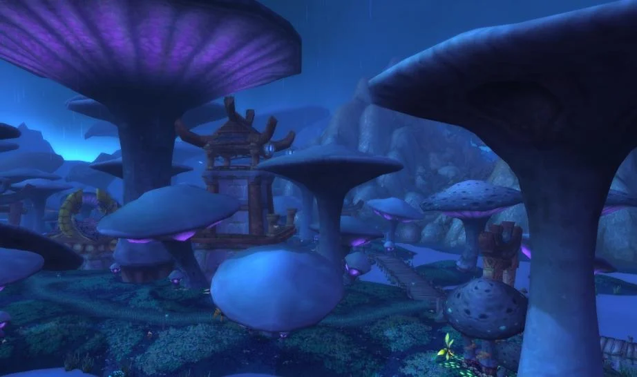
Zangarmarsh
Zangarmarsh is a hauntingly beautiful swamp covered with a forest of giant mushrooms. Though largely teeming with life, sections of the swamp have begun to die as of late, and the sapient fungi of the region seek help in returning it to life. This zone is located in Outland to the west of Hellfire Peninsula.
The marshes are the home of myriad varieties of predatory invertebrates and flora, including Fungal Giants, Spore Bats, and Spore Walkers.